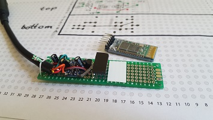
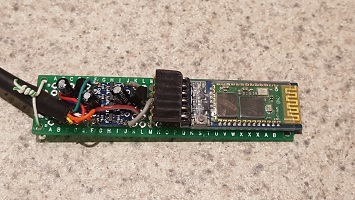

Yaesu Bluetooth CAT Interface
Adding bluetooth support for the CAT interface of my Yaesu FT-857d sounded quite interesting, especially for repeater usage while traveling.
I was really close to buying one from K6VHF but somehow I missed the opportunity and he hasn't been selling any for a while.
Working with the bare HC-05 module is a pain so I decided to go with one that is mounted on the base board. The base board allows the HC-05
module be powered with 5V but the RX/TX signal are still only 3.3V which is a bummer. I decided to use level shifters for the signal lines to
convert the 5V signals from the Yaesu to/from the 3.3V signals of the bluetooth module. Of course this setup means two voltage regulators
since I needed 5V and 3.3V. Tip on the voltage regulators: The spec sheets show the pin layout from the bottom of the LP package, something
I didn't noticed right away.



Note: The RepeaterBook app is locked to specific MAC addresses of bluetooth modules. So only BlueCAT dongles can be used with the app.
Parts List
- (1) HC-05 Bluetooth Module with base board
- (1) 4 Channel bi-directonal locic level converter for 5V to 3.3V
- (1) Voltage regulator 5V (LP2950-50LPRE3)
- (1) Voltage regulator 3.3V (LP2950-33LPRE3)
- (2) 2.2uF elecrolytic capacitor
- (1) 3.3uF elecrolytic capacitor
- (1) 6 pin long legged female header
- (1) 8 pin mini DIN male connector
- 4-wire cable (for mini Din connector)
- short jumper wires
Circuit Diagram and Prefboard (PCB) Layout
Yaesu FT-8x7 Bloothooth Cat Interface Circuit Diagram and Board.pdf
Other Resources:
Interesting Notes
- The Yaesu uses 5V and the HC-05 uses 3.3V for the serial communication. While the Yaesu would fry the HC-05 by applying to high of a voltage to the HC-05's RXD pin, the HC-05's TXD pin should be able to be directly connected to Yaesu's RXD pin as the 3.3V should be enough to cause a locical one.
- The Yaesu FT-857 supplies 5V on the RX pin eventhough the radio is turned off.
- From the BlueCAT FAQ it sounds like they are using the RX pin of the Yaesu to power the bluetoon interface, which is interesting as this eliminates the need for one voltage regulator. Although I'm not sure how that works since it's a signal port and therefore the voltage difference won't alway be 5v.


{kind=link}
{kind=link}